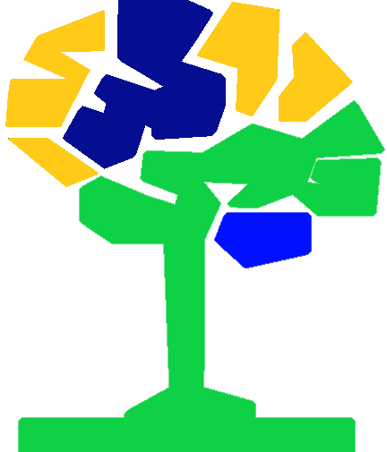
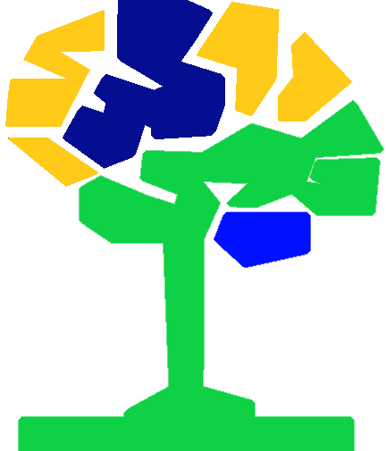

|  Ciências
|  Ciências
* O que são?
Do latim cognoscere, "saber" ou "conhecer", também conhecidas como scientias "ciências", são os
adquirimentos e aprendizados de habilidades através das faces da inteligência e do raciocínio de formas disciplinares e
multidisciplinares dos saberes Naturais, Formais, e Técnicas.
* Escopo das Ciências
* Bibliografias